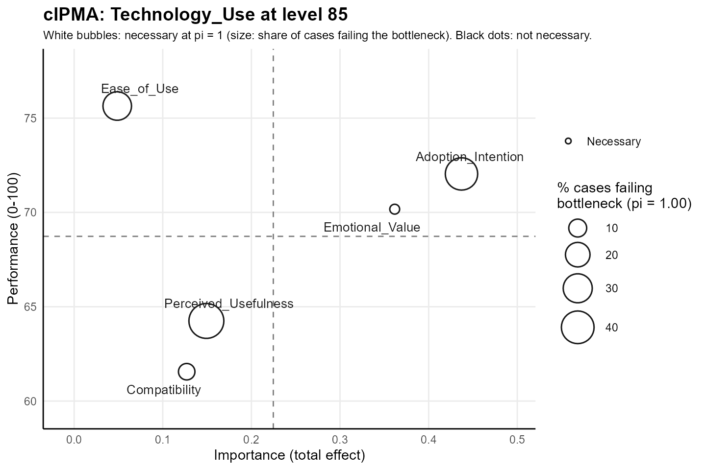

Reproducing the cIPMA of Hauff et al. (2024)
Source:vignettes/articles/reproduction.Rmd
reproduction.RmdHauff, Richter, Sarstedt and Ringle (2024) introduce the combined importance-performance map analysis (cIPMA) with an extended technology acceptance model, in which technology use at level 85 of 100 is the target. The cIPMA package reproduces the published total effects, performance values, CE-FDH effect sizes, required levels and failing counts from the published data.
Data
The data come from the survey of French adopters of e-book readers of
Richter, Hauff, Kolev and Schubring (2023), published on Mendeley Data
under the CC BY 4.0 licence, https://doi.org/10.17632/pd5dp3phx2.4.
read.csv() reads the file from Mendeley Data.
library(cIPMA)
library(seminr)
tam <- read.csv(
"https://data.mendeley.com/public-files/datasets/pd5dp3phx2/files/47b2cc21-ccde-48a1-a2af-9bcdad4e0e2f/file_downloaded",
fileEncoding = "UTF-8-BOM", check.names = FALSE
)
dim(tam)
#> [1] 174 20
names(tam)
#> [1] "PU_01" "PU_02" "PU_03"
#> [4] "CO_01" "CO_02" "CO_03"
#> [7] "EOU_01" "EOU_02" "EOU_03"
#> [10] "EMV_01" "EMV_02" "EMV_03"
#> [13] "AD_01" "AD_02" "AD_03"
#> [16] "USE_01" "Gender" "Age"
#> [19] "Education" "Ebook_reader_ownership"
range(unlist(tam[grep("^(PU|CO|EOU|EMV|AD)_0", names(tam))]))
#> [1] 1 5
range(tam$USE_01)
#> [1] 1 7The file holds 174 respondents and 20 variables: the 16 indicators of the model and four further variables on the respondents. The 15 indicators of perceived usefulness, compatibility, ease of use, emotional value and adoption intention lie on a scale from 1 to 5, and the single item of technology use on a scale from 1 to 7.
Model
Compatibility, perceived usefulness, ease of use and emotional value act on adoption intention, and all five constructs act on technology use (Hauff et al. 2024, Fig. 6). The scales of the indicators enter with the theoretical minimum and maximum, 1 and 5 or 1 and 7, as in Hauff et al. (2024), where the respondents use the entire range of every indicator.
tam_mm <- constructs(
composite("Perceived_Usefulness", multi_items("PU_0", 1:3)),
composite("Compatibility", multi_items("CO_0", 1:3)),
composite("Ease_of_Use", multi_items("EOU_0", 1:3)),
composite("Emotional_Value", multi_items("EMV_0", 1:3)),
composite("Adoption_Intention", multi_items("AD_0", 1:3)),
composite("Technology_Use", single_item("USE_01"))
)
tam_sm <- relationships(
paths(from = c("Compatibility", "Perceived_Usefulness", "Ease_of_Use", "Emotional_Value"),
to = "Adoption_Intention"),
paths(from = c("Adoption_Intention", "Compatibility", "Perceived_Usefulness",
"Ease_of_Use", "Emotional_Value"),
to = "Technology_Use")
)
tam_pls <- estimate_pls(tam, tam_mm, tam_sm)
tam_boot <- bootstrap_model(tam_pls, nboot = 200, cores = 1, seed = 1)
tam_scales <- c(setNames(rep(list(c(1, 5)), 15), grep("^(PU|CO|EOU|EMV|AD)_0", names(tam), value = TRUE)),
list(USE_01 = c(1, 7)))
tam_res <- cipma(tam_boot, "Technology_Use", tam, tam_scales, target_level = 85,
B = 499, seed = 1, pls_model = tam_pls)
tam_res
#> cIPMA: target Technology_Use at level 85 (n = 174, tolerance pi = 1.00)
#>
#> Construct Importance Performance d p Necessary Required Failing
#> Compatibility 0.127 61.6 0.211 0.0020 yes 33.696 8.6%
#> Perceived_Usefulness 0.149 64.2 0.243 0.0020 yes 66.212 47.1%
#> Ease_of_Use 0.049 75.6 0.235 0.0220 yes 66.904 28.7%
#> Emotional_Value 0.362 70.2 0.331 0.0020 yes 49.650 5.7%
#> Adoption_Intention 0.437 72.0 0.294 0.0020 yes 75.000 39.1%
#>
#> Necessary: CE-FDH d >= 0.10 and p < 0.05 at pi = 1.00. Required and Failing:
#> bottleneck at pi = 1.00 (NN: no requirement; NA: level not attained).
#> summary(x) adds the readings; summary(x, detail = "full") adds the tolerance path and
#> the bottleneck table; cipma_diagnostics(x) runs the QNCA diagnostics.The example draws 200 bootstrap resamples and 499 permutations, which
keeps the computation short. The number of bootstrap resamples is a
choice of the analyst in bootstrap_model(), and
cipma() draws 1999 permutations by default. The tolerance
keeps the default pi = 1, where the frontier of Quantile
Necessary Condition Analysis equals the CE-FDH ceiling of Necessary
Condition Analysis (NCA; Dul 2016) that Hauff et al. (2024) use.
All five predictors meet the necessity rule, an effect size
d of at least 0.10 with a permutation p-value below 0.05,
with effect sizes from 0.211 to 0.331 and p-values from 0.0020 to
0.0220. Hauff et al. (2024) report every effect size as significant at p
< 0.05 and at least medium in size.
Comparison with the published tables
The published values come from Tables 1 to 5 of Hauff et al. (2024): the total effects on technology use (Table 1), the average rescaled performance (Table 2), the CE-FDH effect sizes with two decimals (Table 3), the required levels in the bottleneck table of actual values at technology use 85 (Table 4), and the percentage and number of cases below the required levels at technology use 85 (Table 5).
published <- data.frame(
Construct = c("Adoption_Intention", "Emotional_Value", "Ease_of_Use",
"Perceived_Usefulness", "Compatibility"),
Importance = c(0.437, 0.362, 0.049, 0.149, 0.127), # Table 1
Performance = c(72.041, 70.171, 75.640, 64.248, 61.557), # Table 2
d = c(0.29, 0.33, 0.24, 0.24, 0.21), # Table 3
Required = c(75.000, 49.650, 66.904, 66.212, 33.696), # Table 4, technology use 85
Failing_share = c(39.1, 5.7, 28.7, 47.1, 8.6), # Table 5, technology use 85
Failing_count = c(68, 10, 50, 82, 15) # Table 5, technology use 85
)
r <- tam_res$cIPMA_results[match(published$Construct, tam_res$cIPMA_results$Construct), ]
b <- tam_res$Bottleneck_summary[match(published$Construct, tam_res$Bottleneck_summary$Construct), ]
f <- function(x, digits) formatC(x, format = "f", digits = digits)
knitr::kable(data.frame(
Construct = published$Construct,
"Importance, published" = f(published$Importance, 3),
"Importance, cIPMA" = f(r$Importance, 3),
"Performance, published" = f(published$Performance, 3),
"Performance, cIPMA" = f(r$Performance, 3),
check.names = FALSE
), align = "lrrrr", caption = paste(
"Importance (total effect on technology use) and performance (mean rescaled score, 0–100)",
"of the five predictors: published values of Tables 1 and 2 of Hauff et al. (2024) and values computed by cipma()."
))| Construct | Importance, published | Importance, cIPMA | Performance, published | Performance, cIPMA |
|---|---|---|---|---|
| Adoption_Intention | 0.437 | 0.437 | 72.041 | 72.041 |
| Emotional_Value | 0.362 | 0.362 | 70.171 | 70.171 |
| Ease_of_Use | 0.049 | 0.049 | 75.640 | 75.640 |
| Perceived_Usefulness | 0.149 | 0.149 | 64.248 | 64.248 |
| Compatibility | 0.127 | 0.127 | 61.557 | 61.557 |
knitr::kable(data.frame(
Construct = published$Construct,
"d, published" = f(published$d, 2),
"d, cIPMA" = f(r$d, 3),
"Required, published" = f(published$Required, 3),
"Required, cIPMA" = f(b$Required_Level, 3),
"Failing, published" = paste0(f(published$Failing_share, 1), " (", published$Failing_count, ")"),
"Failing, cIPMA" = paste0(f(b$Fail_Percentage, 1), " (", b$Fail_Count, ")"),
check.names = FALSE
), align = "lrrrrrr", caption = paste(
"Necessity of the five predictors for technology use at level 85 at pi = 1: CE-FDH effect size d,",
"required level on the rescaled 0–100 scale, and percentage (number) of the 174 cases below the required level.",
"Published values of Tables 3, 4 and 5 of Hauff et al. (2024) and values computed by cipma()."
))| Construct | d, published | d, cIPMA | Required, published | Required, cIPMA | Failing, published | Failing, cIPMA |
|---|---|---|---|---|---|---|
| Adoption_Intention | 0.29 | 0.294 | 75.000 | 75.000 | 39.1 (68) | 39.1 (68) |
| Emotional_Value | 0.33 | 0.331 | 49.650 | 49.650 | 5.7 (10) | 5.7 (10) |
| Ease_of_Use | 0.24 | 0.235 | 66.904 | 66.904 | 28.7 (50) | 28.7 (50) |
| Perceived_Usefulness | 0.24 | 0.243 | 66.212 | 66.212 | 47.1 (82) | 47.1 (82) |
| Compatibility | 0.21 | 0.211 | 33.696 | 33.696 | 8.6 (15) | 8.6 (15) |
near <- function(a, b) all(abs(a - b) < 1e-9)
c(importance = near(round(r$Importance, 3), published$Importance),
performance = near(round(r$Performance, 3), published$Performance),
d = near(round(r$d, 2), published$d),
required = near(round(b$Required_Level, 3), published$Required),
failing_share = near(round(b$Fail_Percentage, 1), published$Failing_share),
failing_count = near(b$Fail_Count, published$Failing_count))
#> importance performance d required failing_share failing_count
#> TRUE TRUE TRUE TRUE TRUE TRUEEvery computed value equals the published value at the printed precision of the article: the total effects and the performance values at three decimals, the effect sizes at two decimals, the required levels at three decimals, and the failing shares and counts exactly. Perceived usefulness carries the largest share of respondents below the requirement, 47.1% or 82 of 174, and emotional value the smallest, 5.7% or 10.
Comparison with the NCA package
The NCA package computes the CE-FDH effect size and the percentile
bottleneck table, the source of the failing shares of Hauff et
al. (2024), on the rescaled scores of cipma(). The
percentile table gives, for technology use of 85, the percentage and the
number of cases below the required level of each predictor.
if (requireNamespace("NCA", quietly = TRUE)) {
scores <- tam_res$Data_Rescaled
predictors <- tam_res$Predictors
nca <- NCA::nca_analysis(scores, predictors, "Technology_Use", ceilings = "ce_fdh",
bottleneck.x = "percentile", bottleneck.y = "actual",
steps = c(85, NA))
bt <- nca$bottlenecks$ce_fdh
nca_d <- vapply(predictors, function(p) as.numeric(nca$summaries[[p]]$params["Effect size", "ce_fdh"]), 0)
nca_share <- vapply(predictors, function(p) as.numeric(bt[[p]]), 0)
nca_count <- vapply(predictors, function(p) round(as.numeric(attr(bt[[p]], "cases"))), 0)
rr <- tam_res$cIPMA_results[match(predictors, tam_res$cIPMA_results$Construct), ]
bb <- tam_res$Bottleneck_summary[match(predictors, tam_res$Bottleneck_summary$Construct), ]
knitr::kable(data.frame(
Construct = predictors,
"d, NCA" = f(nca_d, 3),
"d, cIPMA" = f(rr$d, 3),
"Failing, NCA" = paste0(f(nca_share, 1), " (", nca_count, ")"),
"Failing, cIPMA" = paste0(f(bb$Fail_Percentage, 1), " (", bb$Fail_Count, ")"),
check.names = FALSE, row.names = NULL
), align = "lrrrr", caption = paste(
"CE-FDH effect size d and percentage (number) of cases below the required level for technology use",
"at level 85, from the NCA package and from cipma() on the same rescaled scores."
))
}| Construct | d, NCA | d, cIPMA | Failing, NCA | Failing, cIPMA |
|---|---|---|---|---|
| Compatibility | 0.211 | 0.211 | 8.6 (15) | 8.6 (15) |
| Perceived_Usefulness | 0.243 | 0.243 | 47.1 (82) | 47.1 (82) |
| Ease_of_Use | 0.235 | 0.235 | 28.7 (50) | 28.7 (50) |
| Emotional_Value | 0.331 | 0.331 | 5.7 (10) | 5.7 (10) |
| Adoption_Intention | 0.294 | 0.294 | 39.1 (68) | 39.1 (68) |
if (requireNamespace("NCA", quietly = TRUE)) {
data.frame(largest_d_difference = max(abs(nca_d - rr$d)),
same_failing_counts = all(nca_count == bb$Fail_Count))
}
#> largest_d_difference same_failing_counts
#> 1 5.828671e-16 TRUEThe effect sizes of the NCA package and of cipma() agree
to the precision of the arithmetic, and both count the same respondents
below each required level.
The combined map
plot(tam_res) draws the combined map of technology use.
Hauff et al. (2024) read adoption intention, in the quadrant of high
importance and high performance, as a priority, because 39% of the cases
miss the required level. Perceived usefulness and ease of use lie in the
quadrants of low importance and count as priorities, with 47% and 29% of
the cases below the requirement. Emotional value and compatibility, with
6% and 9% of the cases below the requirement, count as relatively less
critical.
plot(tam_res)
Combined map of the predictors of technology use at level 85 for the technology acceptance data of Richter et al. (2023). Importance is the total effect on technology use, and performance is the mean rescaled score on 0–100. All five predictors are necessary at pi = 1, and the bubble size is the share of respondents below the required level at pi = 1.
References
- Dul, J. (2016). Necessary Condition Analysis (NCA): Logic and methodology of “necessary but not sufficient” causality. Organizational Research Methods, 19(1), 10–52. https://doi.org/10.1177/1094428115584005
- Hauff, S., Richter, N. F., Sarstedt, M., & Ringle, C. M. (2024). Importance and performance in PLS-SEM and NCA: Introducing the combined importance-performance map analysis (cIPMA). Journal of Retailing and Consumer Services, 78, 103723. https://doi.org/10.1016/j.jretconser.2024.103723
- Richter, N. F., Hauff, S., Kolev, A. E., & Schubring, S. (2023). Dataset on an extended technology acceptance model: A combined application of PLS-SEM and NCA. Data in Brief, 48, 109190. https://doi.org/10.1016/j.dib.2023.109190